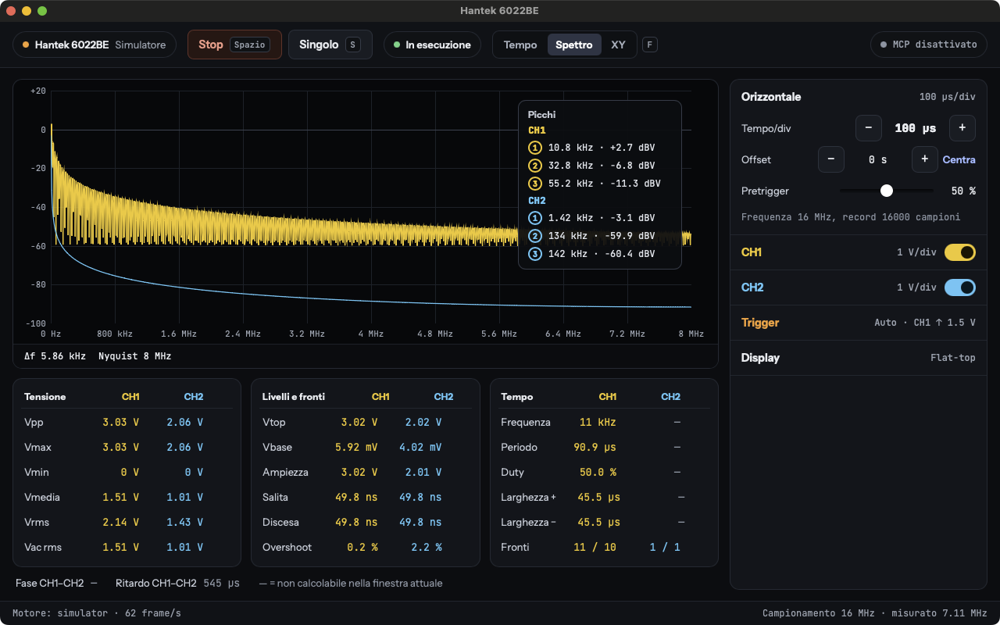
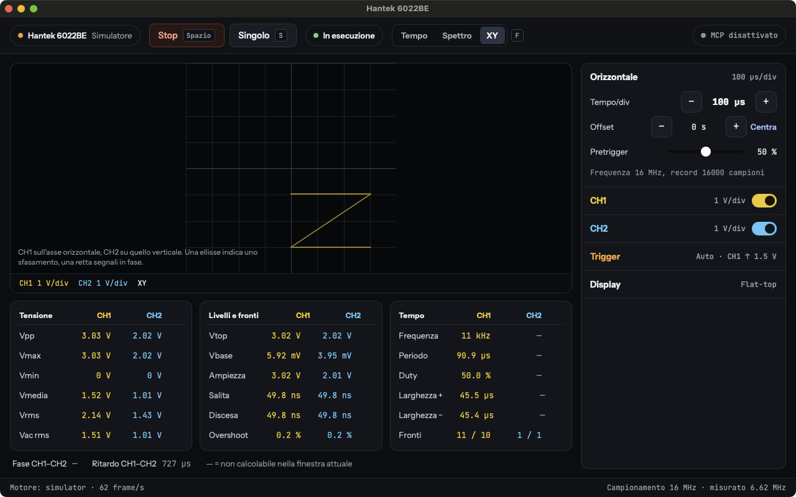

Why a new project instead of OpenHantek
OpenHantek has been the reference open-source software for Hantek USB oscilloscopes for years. Its history explains why this project exists.
| Project | Status | Platform support |
|---|---|---|
| OpenHantek | Unmaintained since December 2018. The maintainer stopped development, and the repository has received only documentation fixes since then. | Linux, macOS, Windows, Android, with old Qt and libusb builds. |
| OpenHantek6022 | The active successor, focused on the 6022BE/BL. It is developed on Debian Linux. | Its README describes Windows as "mostly untested" and macOS as "completely untested", and gives no support for non-Linux issues unless a volunteer steps in. |
| Hantek Oscilloscope | This project. Written from scratch in Rust, developed and tested on macOS with a real 6022BE. | macOS tested with the device. Windows desktop app tested with the device. Linux ARM64 CLI and MCP server tested with the device. Linux x64 compiles and passes the unit tests in CI. |
On macOS the gap was the platform itself: no maintained project treats it as a first-class target. This project starts from macOS and keeps the same code base for the other two systems. It also adds functions that the OpenHantek6022 README does not list: serial protocol decoders, pattern recognition, an MCP server for AI agents and a live streaming API for Python.
The firmware that runs on the oscilloscope derives from the one in Ho-Ro/Hantek6022API, the same base used by OpenHantek6022. The host software shares no code with OpenHantek.
Features
Acquisition
Two channels, 8 bit. Continuous streaming, block capture and roll mode for slow time bases. Offset and gain calibration from the device EEPROM.
Software trigger
Edge, pulse width, runt, window, slope, timeout, two-channel pattern, logical AND/OR and A → B sequence. Auto, normal and single modes.
Measurements
Vpp, Vmax, Vmin, mean, RMS, frequency, period, duty cycle, rise and fall time, overshoot, phase between channels, with statistics.
Analysis
Cursors, FFT with Hann, Blackman-Harris and flat-top windows, spectrogram, math channels, filters, XY mode, color persistence, sin(x)/x.
Protocol decoders
UART with automatic baud-rate detection, I2C, CAN, 1-Wire, PWM and servo, IR (NEC, RC5), Manchester.
Recording and automation
Export to CSV, NumPy, WAV and VCD. MCP server for AI agents, binary WebSocket for Python and numpy.


How it works
The 6022BE is a Cypress FX2LP USB microcontroller connected to a dual 8-bit ADC. It keeps no firmware: at every connection the host loads it into the FX2LP RAM. The device then re-enumerates with a new USB ID and streams the samples over bulk transfers. The 6022BE has no hardware trigger, so the software finds the trigger point in the sample stream.
Hantek 6022BE Host +--------------+ USB 2.0 HS +------------------------------------------------+ | FX2LP + ADC |<-- firmware -- | h6022-usb firmware loader, vendor commands | | CH1 CH2 | -- bulk data ->| h6022-core trigger, time base, roll mode | +--------------+ | h6022-dsp measurements, FFT, filters | | h6022-decode decoders, pattern search | +---------------+---------------+----------------+ | desktop app | CLI (h6022) | MCP / WebSocket| +---------------+---------------+----------------+
No libusb
The USB layer uses nusb, a pure Rust library that talks to IOKit on macOS, usbfs on Linux and WinUSB on Windows.
One device owner
A single process owns the USB device. The app, the MCP server and the Python clients read the same acquisition at the same time.
Native app
The desktop app uses Tauri with a Svelte interface. The installer is a few megabytes and needs no Qt runtime.
Platforms
| System | Package | USB access |
|---|---|---|
| macOS 11 or later | .dmg, universal for Apple Silicon and Intel | No driver needed. |
| Windows 10 and 11 | x64: .msi or -setup.exe; ARM64: arm64-setup.exe | WinUSB driver, installed once with Zadig. |
| Linux x64 and ARM64 | .deb, .rpm, .AppImage | The .deb and .rpm install a udev rule. |
The installation guide describes the driver setup for each system.
For developers and AI agents
The command-line tool runs without the graphical interface:
h6022 info h6022 capture --rate 1M --channels 2 --range1 5 --range2 5 --samples 100000 --out capture.csv h6022 serve
h6022 serve and the desktop app start an MCP server on 127.0.0.1. An AI
agent can configure the oscilloscope, capture, measure, decode protocols and record to disk. The
Python client in python/h6022.py receives the samples as numpy arrays.
Contribute
Report bugs, crashes and test results, or ask for new decoders and new Hantek models, through the issue forms. Ask questions in Discussions.